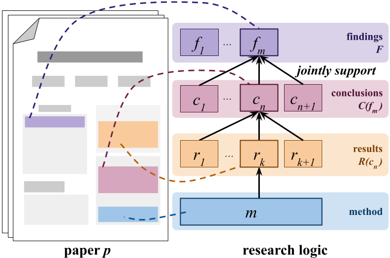

Research logic as a formal reasoning structure.

Large Language Models (LLMs) have great potential to accelerate and support scholarly peer review and are increasingly used as fully automatic review generators (ARGs). However, potential biases and systematic errors may pose significant risks to scientific integrity; understanding the specific capabilities and limitations of state-of-the-art ARGs is essential. We focus on a core reviewing skill that underpins high-quality peer review: detecting faulty research logic. This involves evaluating the internal consistency between a paper's results, interpretations, and claims. We present a fully automated counterfactual evaluation framework that isolates and tests this skill under controlled conditions. Testing a range of ARG approaches, we find that, contrary to expectation, flaws in research logic have no significant effect on their output reviews. Based on our findings, we derive three actionable recommendations for future work and release our counterfactual dataset and evaluation framework publicly.
BibTex Code Here